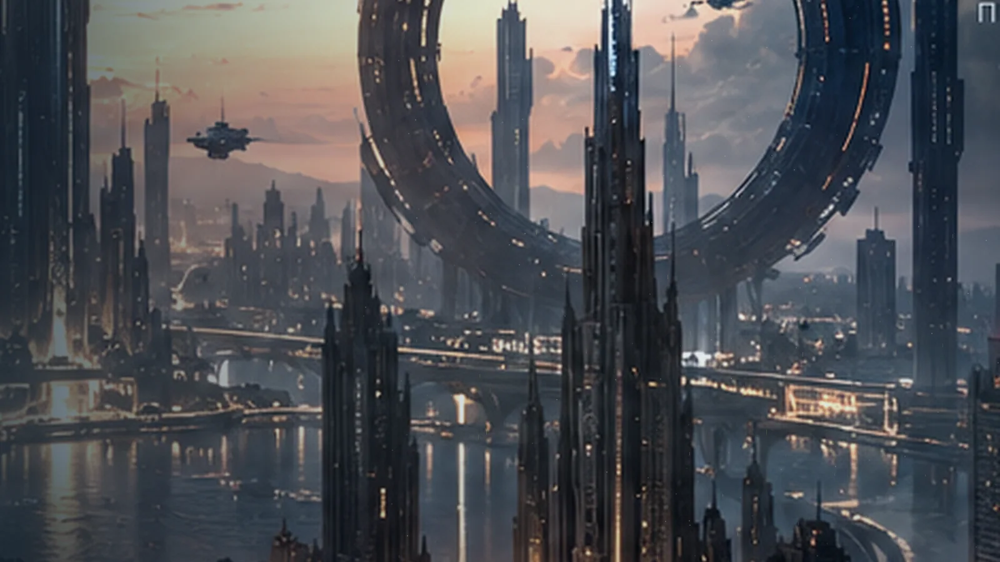

Сохраняется только локальный прогресс браузера. Звук без согласия не запускается.
Открытые вами сцены доступны для повторного посещения. Неоткрытые не раскрывают сюжет.
Меняется форма, не подтверждённый смысл.